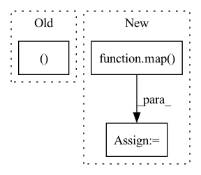

Pattern ID :422

Before Change
get_latent_attn = lambda: PreNorm(latent_dim, Attention(latent_dim, heads = latent_heads, dim_head = latent_dim_head))
get_latent_ff = lambda: PreNorm(latent_dim, FeedForward(latent_dim))
get_cross_attn, get_cross_ff, get_latent_attn, get_latent_ff = map(cache_fn, (get_cross_attn, get_cross_ff, get_latent_attn, get_latent_ff))
self.layers = nn.ModuleList([])
for i in range(depth):
After Change
get_latent_attn = lambda: PreNorm(latent_dim, Attention(latent_dim, heads = latent_heads, dim_head = latent_dim_head))
get_latent_ff = lambda: PreNorm(latent_dim, FeedForward(latent_dim))
get_latent_attn, get_latent_ff = map(cache_fn, (get_latent_attn, get_latent_ff))
self.layers = nn.ModuleList([])
cache_args = {"_cache": weight_tie_layers}
In pattern: SUPERPATTERN
Frequency: 3
Non-data size: 3
Instances
Fragment ID: 1269475
Project Name: lucidrains/perceiver-pytorch
Commit Name: dc530de88e6035a2f08d7e35ce23e57abe8371bd
Time: 2021-08-30
Author: lucidrains@gmail.com
File Name: perceiver_pytorch/perceiver_io.py
M Class Name: PerceiverIO
N Class Name: PerceiverIO
M Method Name: __init__(1)
N Method Name: __init__(1)
M Parent Class: nn.Module
N Parent Class: nn.Module
M File Name: perceiver_pytorch/perceiver_io.py
N File Name: perceiver_pytorch/perceiver_io.py
M Start Line: 126
M End Line: 152
N Start Line: 125
N End Line: 143
'>
Before Change
get_latent_ff = lambda: PreNorm(latent_dim, FeedForward(latent_dim, dropout = ff_dropout))
if weight_tie_layers:
get_cross_attn, get_cross_ff, get_rev_cross_attn, get_rev_cross_ff, get_latent_attn, get_latent_ff = map(cache_fn, (get_cross_attn, get_cross_ff, get_rev_cross_attn, get_rev_cross_ff, get_latent_attn, get_latent_ff))
self.layers = nn.ModuleList([])
for _ in range(depth):
After Change
get_latent_ff = lambda: PreNorm(latent_dim, FeedForward(latent_dim, dropout = ff_dropout))
if weight_tie_layers:
get_cross_attn, get_cross_ff, get_rev_cross_attn, get_rev_cross_ff, get_input_attn, get_latent_attn, get_latent_ff = map(cache_fn, (get_cross_attn, get_cross_ff, get_rev_cross_attn, get_rev_cross_ff, get_input_attn, get_latent_attn, get_latent_ff))
self.layers = nn.ModuleList([])
for _ in range(depth):
self.layers.append(nn.ModuleList([
'>
Fragment ID: 1269477
Project Name: lucidrains/perceiver-pytorch
Commit Name: 10a83b0c27f1bf9d0018a1d968a2fa397d8888c9
Time: 2021-03-22
Author: lucidrains@gmail.com
File Name: perceiver_pytorch/experimental.py
M Class Name: Perceiver
N Class Name: Perceiver
M Method Name: __init__(1)
N Method Name: __init__(1)
M Parent Class: nn.Module
N Parent Class: nn.Module
M File Name: perceiver_pytorch/experimental.py
N File Name: perceiver_pytorch/experimental.py
M Start Line: 49
M End Line: 61
N Start Line: 87
N End Line: 107
'>
Before Change
input_size = (dim * self.num_categories) + num_continuous
l = input_size // 8
mult1, mult2 = mlp_hidden_mults
self.mlp = nn.Sequential(
nn.Linear(input_size, l * mult1),
After Change
input_size = (dim * self.num_categories) + num_continuous
l = input_size // 8
hidden_dimensions = list(map(lambda t: l * t, mlp_hidden_mults))
all_dimensions = [input_size, *hidden_dimensions, dim_out]
self.mlp = MLP(all_dimensions)
'>
Fragment ID: 1269471
Project Name: lucidrains/tab-transformer-pytorch
Commit Name: 474d9654d739c8004502c08a49ba6fed51afadb6
Time: 2020-12-18
Author: lucidrains@gmail.com
File Name: tab_transformer_pytorch/tab_transformer_pytorch.py
M Class Name: TabTransformer
N Class Name: TabTransformer
M Method Name: __init__(1)
N Method Name: __init__(1)
M Parent Class: nn.Module
N Parent Class: nn.Module
M File Name: tab_transformer_pytorch/tab_transformer_pytorch.py
N File Name: tab_transformer_pytorch/tab_transformer_pytorch.py
M Start Line: 90
M End Line: 134
N Start Line: 145
N End Line: 150